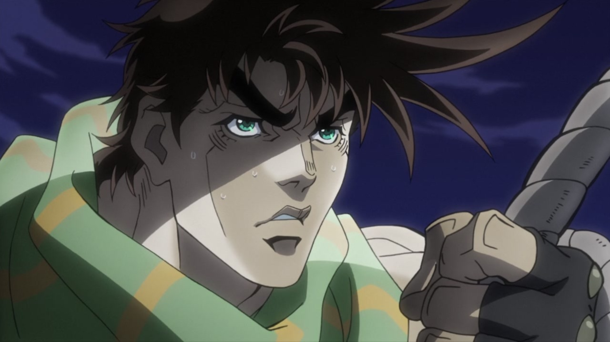
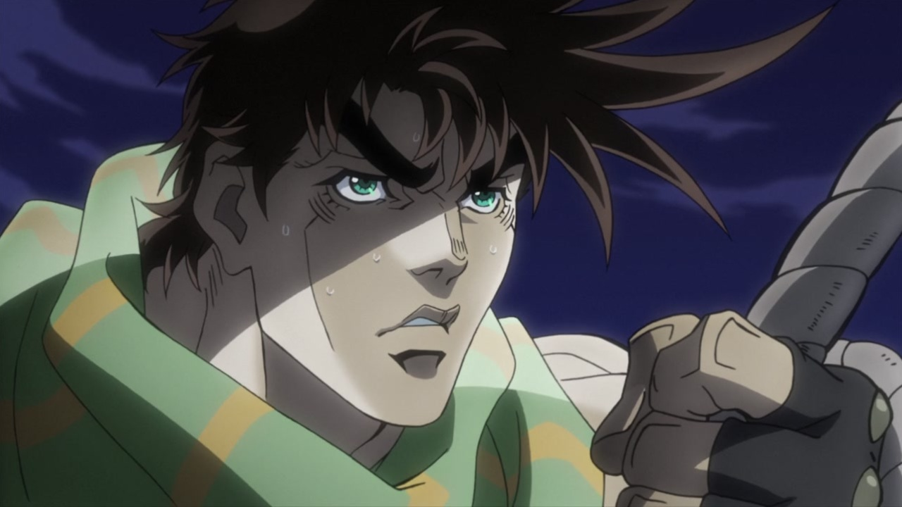

Hello again! As you can see, lately the comparisons have been coming more frequently than usual - that’s simply because I’m currently on vacation, and have a little more time to dedicate to this blog! Don’t get too used to this new accelerated schedule, though… It’s back to work for me, on Monday! Well, anyway, welcome back… Today we’re going to take a look at the comparison for episode #24, “The Ties that Bind JoJo”!
Let’s blow this popsicle stand!
- Today’s first difference is this shot of Wham, where his head has been redrawn, the lighting is different, there are more specks of dust in the air…:
- …and, obviously, the crumbling animation is different too:
- The tip of Kars’ nose has been retouched here:
- And the background in this shot is much more interesting:
- This shot of Stroheim blasting the zombies with light is less blurry and less distorted, and the light effect itself is completely different:
- Kars’ face has been retouched here:
- The BD version of this shot starts more zoomed in, and slowly zooms out:
- In this shot, the zombies have glowing red eyes:
- And in this bit, both Kars and Joseph have been moved and retouched; notably, the rope now wraps around Joseph’s hand:
- The rope again, here…:
 

- Joseph’s been slightly moved and retouched here (and the rope is, once again, wrapped around his hand…):
- Here, this shot is more zoomed in on Kars’ juicy buttocks, there’s more of a distortion along the edges and Joseph has also been slightly moved, I think:
- Alright, y’all should know the ropes by now:
- This slashing animation is brighter:
- I’m at the end of my rope… (the fire is also a little bit brighter):
- Alright, folks, say goodbye to the rope, and say hello to the crystals! Almost everything is brighter here, Kars’ wounds are uncensored, and the crystals in the foreground are slightly blurrier:
- And again here… (the text on the bottom is also missing and the pattern on Kars’ arm is different too):
- The background is lit differently here:
- Once again the crystals are brighter, the wounds are uncensored and the burning pattern on Kars’ arm is different:
- Here, apart from the same old brighter crystals, it’s the shading on his arm to be different, not the pattern:
- Old uncle Speed Weed has been redrawn here:
- And here, a corner of his right cheek has been filed and is now less spiky…:
- Even Speedwagon is redrawn:
- Let’s close this short comparison with a quick credit difference! Here, animator 糸井恵 (Itoi Megumi) has been added at the bottom:
And that’s it for today, I’m afraid! This comparison was surprisingly quick and painless… I can’t even remember the last time I made a comparison with so few images and videos! I hope you still enjoyed it nonetheless.
See you next time for the second-to-last episode in Joseph’s Bizarre Adventure!